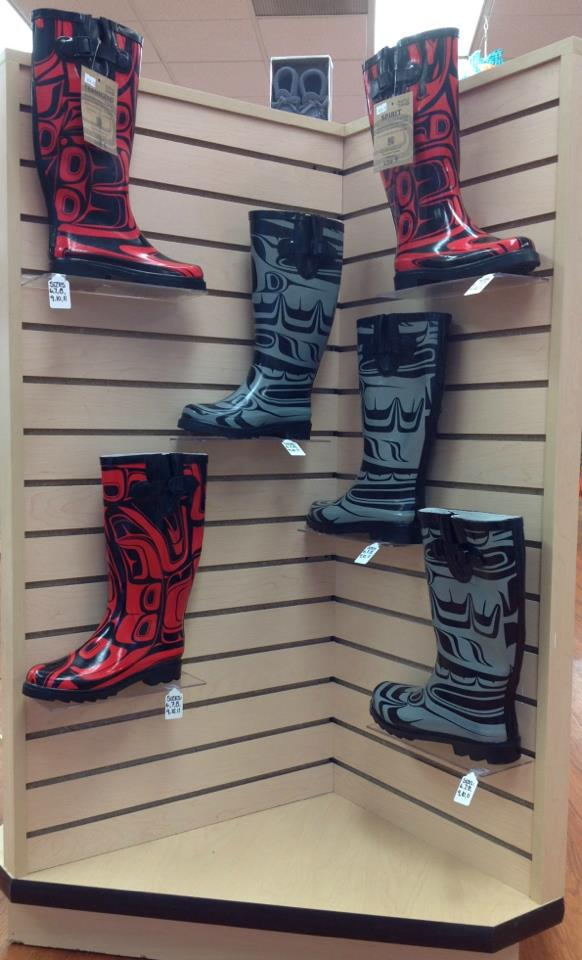
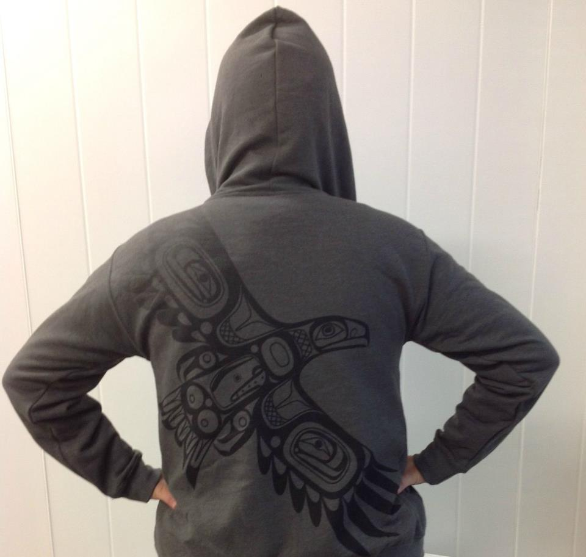
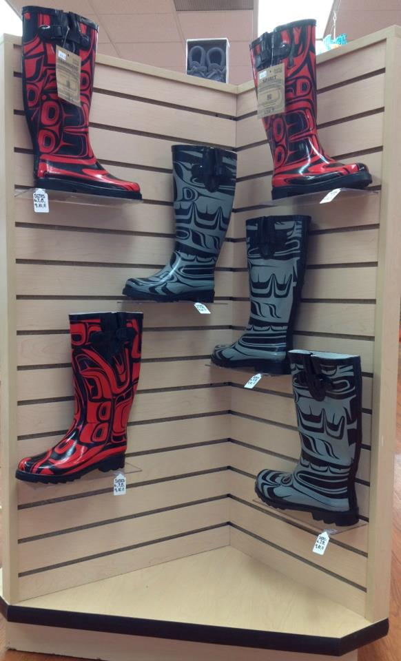
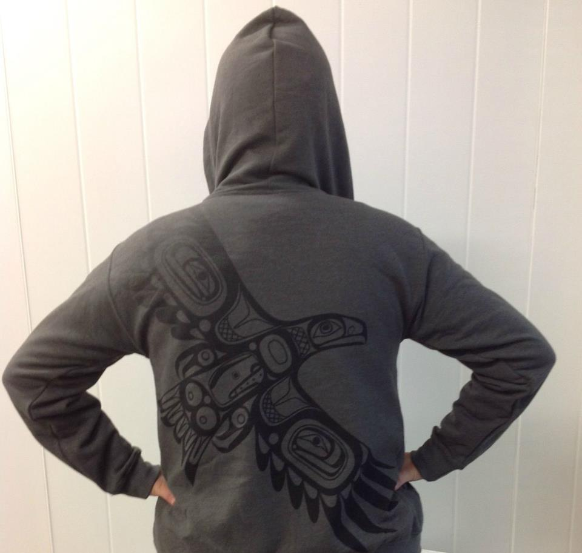

First Nations Fashion History
Wardrobes
During the cold rainy season protective clothing was essential. From this need evolved variety of rainwear that was water repellent, warm* yet still offered freedom of movement. The special skills required to gather the bark and treat it and the techniques involved in fashioning the impressive cedar-bark garments all reflected the unique Nuu-chah-nulth culture. Unlike some of our neighbors who dressed almost exclusively in animal skins, the Nuu-chah-nulth people predominately wore garments cleverly fashioned from woven shredded cedar bark. Each garment was light-weight, pliable and when probably prepared pleasantly soft. The cedar bark robe, wore by both males and females was primarily for warmth.
A robe worn by a chief or nobility was made from the rarer yellow cedar rather than red cedar and often had a border of sea otter or mink added for luxury.
A cedar bark poncho was similar to a long mat but with a hole left for the persons head.
These outfits were often supplemented with a conical hat. Woven tightly from finely split cedar bark or spruce roots (often of a double thickness) it made an excellent waterproof article** that also served as a sun visor when out on the water. A woven cedar bark headband inside kept the hat just above eye level.
Very little occurred in the life of the Nuu-chah-nulth people that did not include cedar. It provided, the cradles children were placed in at birth and the mats, which covered the deceased. It provided the bowls for the humblest of meals and the masks for the greatest of potlatches.
Nuu-chah-nulth vocabulary included a different word to name each size of cedar tree indicating its specific use. Indeed, the Nuu-chah-nulth people could be called, as one elder put it, the Cedar People.
Influences
European influences had an impact on traditional wear and were introduced into new creations that still served to signify the identity of the wearer. Representations of family history were retold in button blankets, aprons, and dance shirts in the 19th century and have continued to be represented in the 21st century on button blankets, dresses, coats, vests, hats, and scarves. blankets, aprons, and dance shirts in the 19th century and have continued to be represented in the 21st century on button blankets, dresses, coats, vests, hats, and scarves.
Initially women would wear dresses only under their trade blankets. By the late 1800's, early 1900's most Native people were wearing tailored clothing, thus putting a virtual end to the ancient techniques used in the construction of cedar bark clothing.
 



Today
Our modern day clothing consists of all different native art. From basic everday wear like; t-shirts, sweats, leggings, hoodies and baseball caps to Formal wear such as; dresses, suits, coats, and ties. You don't see many people wearing cedar woven clothes on a daily basis unless it is for a special event (potlaches, wedding, welcoming, coming of age, chiefs, naming ceremony, song and dance). There are many different world famous first nations artists, not just for clothing but as we all know about carvings, paintings and jewellary. Native art has become a big hit in not only our generation but since we were using nature to clothe us and keep us warm, make bowls, bent boxes, canoes and long houses etc.
My goal is to start my own clothing line with my native art, as I have been drawing since I was 15; when I learned to start carving. I plan on making reasonably priced clothing so that everyone can afford it.